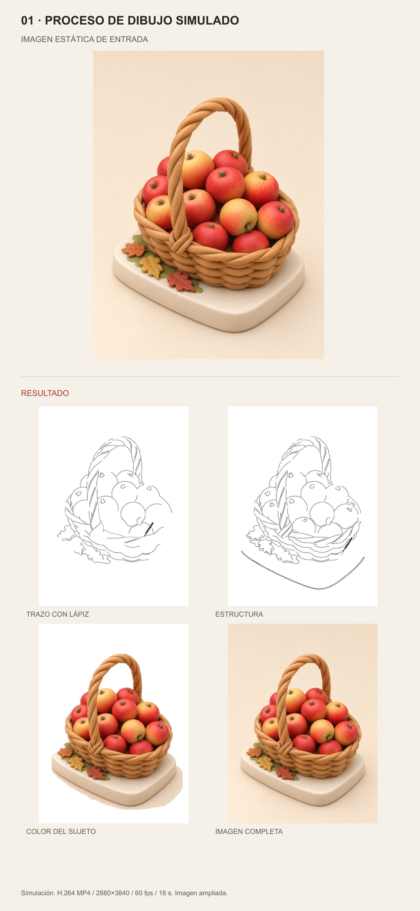

01 · PROCESO DE DIBUJO SIMULADO

Simulación. H.264 MP4 / 2880×3840 / 60 fps / 16 s. Imagen ampliada.
Original arriba · Resultado abajo. Proporciones completas, sin recortes. Skill · Documentación y fuentes

Simulación. H.264 MP4 / 2880×3840 / 60 fps / 16 s. Imagen ampliada.